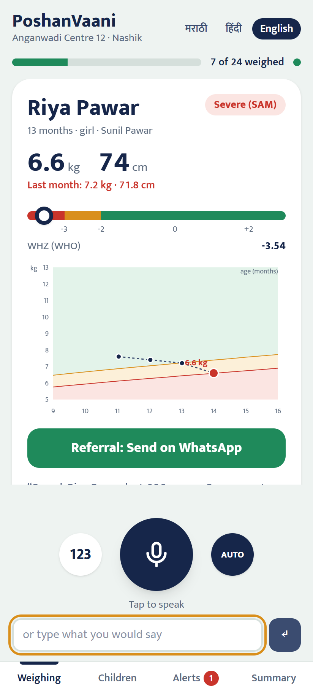
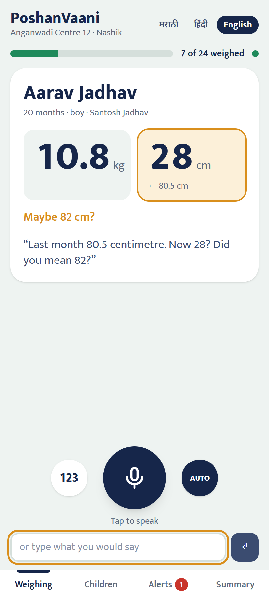

Healthcare access · Scaler × Wispr Flow hackathon · Round 2
PoshanVaani
Speak the reading while the child is still on the scale.
A hands-free voice register for India's anganwadi workers. It hears the weight and height in Marathi, Hindi or English, reads them back, catches wrong numbers before they are saved, and flags malnutrition the same day.
Code: github.com/aithal007/poshanvaani · Live demo: aithal007.github.io/poshanvaani · Run: docker compose up (no keys needed)
Problem and solution: one wrong digit labels a healthy child malnourished
The problem today
- Every month the worker weighs every child under six, then types each reading into the Poshan Tracker app, field by field, in English script, often hours later from a scribbled note.
- Typed later means typed wrong: 28 for 82, 92 for 9.2. A wrong entry can mark a healthy child "severely malnourished", and the app makes it hard to undo.
- Hindi YouTube tutorials on correcting wrong height and weight entries have over 5 lakh views. Tamil Nadu workers keep 16 registers and 2 apps and upload until 10 pm.
- The cost: bad data hides real malnutrition. In 2023, Poshan Tracker showed wasting 12 percentage points below the national NFHS-5 survey.
PoshanVaani
- She speaks one sentence with the child still on the scale: Riya Pawar, saha point saha kilo, chauhattar centimetre.
- It finds the child, reads the values back, and saves only when she says "ho".
- Before saving it checks the reading against last month and WHO growth limits, and asks Last month 80.5 cm. Now 28? Did you mean 82? while the child is still there.
- It computes WHO z-scores, speaks a SAM or MAM alert, adds the child to the referral list and prepares a WhatsApp referral slip.
- Works offline, then syncs and exports in Poshan Tracker's entry shape.
Sources: YouTube search of Poshan Tracker tutorials (top results, Nov 2026); ThePrint and Behan Box ground reports, Tamil Nadu (2025–26); The Wire, Poshan Tracker vs NFHS-5 comparison (2023).
Who it is for, and how many
13.1 lakh
anganwadi workers in position: the users. Mostly women aged 25–55, school-educated, on low-cost Android phones, speaking Marathi, Hindi and 20 other languages mixed with English numbers.
7.7 crore
children tracked every month in Poshan Tracker across 14 lakh anganwadi centres. 6.3 crore of them get monthly growth monitoring: every one is a reading typed by hand today.
1 user
to start: Sunita, a worker in Nashik district, Maharashtra, with 24 children. The prototype ships with her centre's demo roster: two children named Riya, one child sliding into severe malnutrition, six already weighed today.
Also benefits: supervisors and PHC medical officers, who get referral lists they can trust; mothers, whose child is referred the same day instead of next month; and state nutrition programmes, whose dashboards depend on honest data.
Sources: PIB Poshan Tracker factsheet (July 2026); anganwadi worker count as of 31 July 2026 (Organiser, Oct 2026).
Addressable market
Users (verified)
- 14 lakh anganwadi centres; 13.1 lakh workers in position (14 lakh sanctioned, 92,121 vacant)
- 41,000 supervisors and 5,200 CDPOs: the buyer's field staff
- 10.3 lakh ASHAs (next segment)
- 8.8 crore children 0-6 enrolled; 6.3 crore growth-monitored monthly
Market size estimate
- TAM ₹158-316 cr/yr: 26 lakh Indian frontline workers (AWW, ASHA, ANM, supervisors) × ₹50-100 per month. More than 5M community health workers worldwide, 1.06M in Africa.
- SAM ₹42-84 cr/yr: about 7 lakh AWWs in Hindi and Marathi states.
- SOM ₹9-18 cr ARR in 3 years: Maharashtra and MP, 1-2 lakh AWWs.
Why a state can pay
- Saksham Anganwadi & Poshan 2.0 budget: ₹21,960 cr (FY25-26 BE). Full AWW rollout at ₹1,200/yr is about 0.7% of it.
- States already pay ₹2,000/yr per AWW for mobile data, plus a ₹500/month performance incentive.
- Comparable: CommCare charges $2 (about ₹170) per user per month.
Value created estimate: at about ₹67 per hour of worker time (₹10,000/month honorarium), saving 10-20 hours of data work a month is worth ₹1,050-2,100 cr/yr across all AWWs. Impact base: NFHS-6 rates on 6.3 crore monitored children imply about 1.2 crore wasted and about 33 lakh severely wasted children. Finding them early is the point.
Sources: Lok Sabha AU2416 (Aug 2025); Rajya Sabha PQ 267 (Mar 2025); MWCD vacancy letter; PIB (Jan 2025, Jul 2026, Oct 2023); India Budget EB 101 FY25-26; CommCare pricing page; NFHS-6 (2023-24). Price per worker and hours saved are assumptions to be measured in the pilot.
How it works: the voice flow, step by step
- She taps once (or says Vajan shuru). Hands-free mode keeps listening after every reply.
- She says Riya, saha point saha kilo, chauhattar centimetre. The parser reads digits, Devanagari or romanised number words, saade / sava / paune / dedh and units.
- Two Riyas on the roster, so it asks Riya Pawar or Riya Shinde?. She answers Pawar.
- Read-back: Riya Pawar. 6.6 kilo, 74 centimetre. Correct?. ho / haan saves; nahi, 6.8 kilo fixes only that field.
- Saved, then: Riya Pawar lost 600 grams. Severe acute malnutrition. Added to the referral list. Next child. The growth chart point drops into the red band.
- Any time: kon baaki aahe? names who is left; maagcha radd kara undoes; session band kara ends with a spoken summary.

System architecture
Figure 1. Every clinical decision runs on the worker's phone; the network is optional. Speech arrives through a provider interface: Chrome Web Speech (free, the default), Sarvam Saaras (optional key) or the keypad. A state-machine engine passes each transcript through deterministic, unit-tested modules: the number parser, the cross-script name matcher, the plausibility check, WHO LMS z-scores, the faltering watch list and the data-honesty score. Confirmed readings are stored in IndexedDB with their transcript, audio clip and timing, then sync when the phone is online. The server is a dependency-free Node process started by docker compose up. Without a key, its Sarvam routes answer "key not set".
One spoken sentence, end to end
Figure 2. From "Riya, saha point saha kilo, chauhattar centimetre" to a referral in ten steps. Stages 1-4 turn audio into numbers and a child: N-best transcripts, normalisation of Devanagari and romanised text, 880+ Marathi and Hindi number forms, and phonetic roster matching that asks "Pawar or Shinde?". Stages 5-6 are the safety layer: a check against last month and WHO growth velocity (28 cm becomes "did you mean 82?"), then a read-back that states the change. Only a spoken "ho" saves. Stages 7-10 compute WHO z-scores, apply India's 2023 SAM/MAM protocol (WHZ, MUAC and oedema), act on the result and store it offline.
Why voice comes first, not as a feature on top
- Her hands are holding the child. The number exists only at the moment the child is on the scale. Any app that waits for her to type later will copy numbers wrongly, which is exactly today's failure.
- She already says it aloud to the mother. PoshanVaani listens to speech that is already happening.
- Voice makes the check come at the right moment. A mistake is caught and re-measured in seconds, not discovered next month when the child has gone home.
- Her language, her numbers. Poshan Tracker's menus are translated, but entry is still typed in English script. Speaking needs no script at all.
Remove voice and nothing is left
Without speech, PoshanVaani becomes one more form, the very thing that is broken. The keypad exists only as a fallback for a noisy room.
Signature moment

The conversation as a state machine: how errors are recovered
Figure 3. No path saves a value the worker did not hear and confirm. An ambiguous name, a missing value or an implausible number each leads to one short spoken question. "nahi" re-opens the reading. "nahi, 9.4 kilo" corrects a single field. An unusual but true value needs a second "ho" and is flagged for the supervisor. Commands such as "kon baaki aahe?" work in any state. Two misses in a row (noise, silence) open the keypad, and keypad values pass the same checks.
When things go wrong: noise, accents, mixed languages and misheard numbers
| Situation | What PoshanVaani does |
|---|
| Misheard number (28 vs 82, 92 vs 9.2, 11300 g) | Checks against last month and WHO monthly growth limits before saving. Suggests the likely intended value (digit swap, lost decimal, grams as kilos) and asks. Accepts haan or a re-measured number. |
| Mixed languages | One lexicon of 880+ Marathi and Hindi number forms (Devanagari and romanised, verified against LibreOffice libnumbertext) plus English. saade nau kilo, नऊ पॉइंट दोन, 9.2kg, एकशे दहा all parse. |
| Accents and names | Names are matched by phonetic key across scripts (रिया पवार = Riya Pawar = Reeya Powar). The recogniser's alternative transcripts are tried against the roster. Ambiguous names get a spoken question. |
| Noise, crying child | Nothing saves without a spoken confirmation. A missing field is asked for alone. After two misses the big keypad opens. The values still go through the same checks. |
| Unusual but true reading | Saying yes twice force-saves, and the entry is flagged for the supervisor. |
| No internet | Readings are stored on the phone (IndexedDB) with a sync queue. Browser speech needs internet, so offline entry uses the keypad or typed input. |
Every rule above is deterministic code with unit tests: 101 tests cover the parser, name matching, WHO z-scores, plausibility and full conversations in English and Marathi.
Beyond entry: what voice capture makes possible
Data honesty score
WHO/UNICEF and SMART data-quality checks run on every centre: bias-adjusted digit preference, copied heights, duplicates and implausible z-scores. Numbers typed in later heap on .0 and .5. Numbers spoken at the scale do not. Demo centre: typed register 46/100 vs spoken 100/100. Because voice records when and how each value was captured, a supervisor can trust it. Poshan Tracker has no such check.

Growth-faltering watch list
Rules based on trajectory, following the finding (Dimagi and American India Foundation, anganwadi data) that the last 2–4 months predict malnutrition best. The rules flag flat weight for 2 months, WHZ sliding toward −2, or gain far below WHO norms. In the demo, Riya was flagged as "sliding" before today's reading showed SAM. The app reads the list aloud: Speak the list.

A message for the family
After every reading, a short note in Marathi or Hindi gives the weight, the change, one action and the next visit. It is played aloud at the centre or sent on WhatsApp:
नमस्कार सुनीलजी. आज रियाचे वजन 6.6 किलो आहे. मागच्या महिन्यापेक्षा 600 ग्रॅम कमी झाले. गुरुवारी रियाला अंगणवाडीत घेऊन या…
Generic broadcast voice messages (Kilkari RCT) had weak nutrition effects. This one is about this child, this reading.
Typing vs voice, measured
A built-in stopwatch races a typical typed form against the voice time recorded for every entry. The numbers are real, not claimed.
Who hears what: one weighing, three audiences
Figure 4. One spoken reading serves the worker, the family and the system.
- The worker gets the read-back and a spoken SAM alert within seconds, with her hands still on the child.
- The mother gets a message about her own child in Marathi or Hindi: the weight, the change, one action and the next visit date. It is played aloud at the centre or sent on WhatsApp.
- The supervisor or PHC gets the referral slip straight away. When the phone is online, she also gets the honesty score, the watch list and a CSV for Poshan Tracker.
- Round 3 closes the loop: the mother asks by voice note and hears her child's status, a consumer side reaching about 8 crore families.
Third-party dependencies: cost and availability risks
| Dependency | Used for | Cost | If it gets costly or stops |
|---|
| Chrome Web Speech API | Speech to text (default) | Free, no key | Switch to Sarvam in Settings, or use the keypad. All logic runs locally. |
| Browser speech synthesis | Spoken replies | Free | Every reply is also shown in large text on screen. |
| Sarvam AI Saaras (STT) and Bulbul (TTS), optional | Stronger Indian-language speech | About ₹0.49 per audio minute: ~40 children × 30 s ≈ ₹10 per worker per month | Falls back to browser speech. The engine sits behind one provider interface, so Bhashini or an on-device model can be swapped in. |
| WHO Child Growth Standards | z-scores, SAM/MAM | Free, bundled | No network needed. India 2023 SAM/MAM protocol thresholds. |
| WhatsApp (wa.me share) | Referral slip, family message | Free (share link) | The slip is also shown on screen and read aloud at the centre, with SMS as a fallback. Round 3 voice notes would use the WhatsApp Business API, which is priced per conversation. |
| Poshan Tracker | System of record | — | No public API: we export a CSV in its entry shape. Real integration needs a state WCD partner (see launch plan). |
No AI model decides anything. Speech-to-text only produces text. Numbers, matching, checks and classification are deterministic code, so there is no LLM cost and no hallucinated value. The worker confirms every value; the alert advises referral and does not diagnose.
Go-to-market plan: one block, one district, one state
Months 0–3Block pilot, 20 centres
- Partner a CDPO and an NGO already working in anganwadis.
- Train in one 30-minute session at the sector meeting.
- Measure entry time, errors versus supervisor re-measurement, and SAM children caught.
Months 3–9District rollout
- CSR funding (anganwadi CSR precedent in Goa).
- Add 2 more languages and supervisor view.
- Apply to the Sarvam startup programme and Bhashini challenges for speech credits.
Months 9–18State partner
- State WCD MoU as non-financial technical partner.
- Register as a Digital Public Good (open source, do-no-harm by design).
- Offer MoWCD a voice-entry module for Poshan Tracker.
Precedent: Khushi Baby went from a district pilot in Udaipur to the Rajasthan government's technical partner and state-funded scale-up. First users: workers reached through the sector meeting their supervisor already runs every month, so adoption happens where the training already happens. Buyer and price: the state WCD department (or CSR during the pilot), at about ₹75 per worker per month. That is less than half the data allowance already paid, and Sarvam speech costs about ₹15 of it. Open source means no vendor lock-in for the government.
How we will know it works
A six-month pilot: 100 voice centres compared with 100 similar centres that keep typing.
- Accuracy: an independent team re-measures 10% of children each month. Target: 95% of entries within 0.1 kg and 0.5 cm.
- Errors: supervisor correction requests fall by 80%; biologically impossible entries below 0.5%.
- Time: 90% of readings recorded the same day; after-hours data work halved (time diaries).
- Detection: days from a first weight loss to referral fall from about a month to under 7.
- Adoption: by month two, 80% of weighings done by voice.
Main risks, stated honestly
- Becoming one more app. Without a state partner accepting the export, workers would re-type. We scale only where it replaces typing.
- Recognition in rural accents and noise. Read-back, plausibility checks and the keypad limit the damage.
- Out of scope: face authentication and network failures in today's apps.
From prototype to finale (Round 3)
Built and tested now
- Voice entry of weight, height, MUAC and oedema in Marathi, Hindi and English, with read-back and plausibility checks
- WHO z-scores and SAM/MAM per the India 2023 protocol; a spoken alert, a WhatsApp referral and a family message
- Data honesty score, a faltering watch list and a typing-vs-voice race
- Offline storage, sync queue and CSV export;
docker compose up with no keys; 101 automated tests; live demo
Next, in order
- Field test with anganwadi workers: real Marathi recordings to tune the lexicon, and measured minutes saved
- Supervisor sector view: honesty score, SAM/MAM and overdue weighings across 20-25 centres
- Mother asks by voice: she sends a WhatsApp voice note and hears her child's status
- On-device speech (Chrome
processLocally, Vosk Hindi) for fully offline voice
- Pre-recorded Bulbul prompts: natural Marathi voice at zero runtime cost
ASHA voice tools record what she says.
PoshanVaani catches what she mis-said.
Working prototype today
- One core flow end to end: speak, match, read back, check, save, alert, refer, export.
- Data honesty score, faltering watch list, family voice message, typing-vs-voice race.
- Marathi, Hindi and English voice and UI.
- Runs with one command and no keys; offline storage; 101 automated tests.
At the finale
- Real Marathi field recordings to tune the lexicon.
- MUAC and oedema capture, supervisor view, more languages.
- On-device speech for full offline use.
github.com/aithal007/poshanvaani · aithal007.github.io/poshanvaani · Parikshith Aithal K V